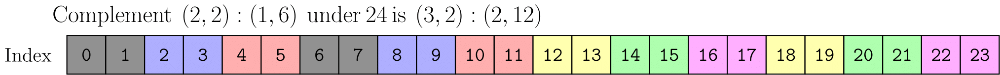
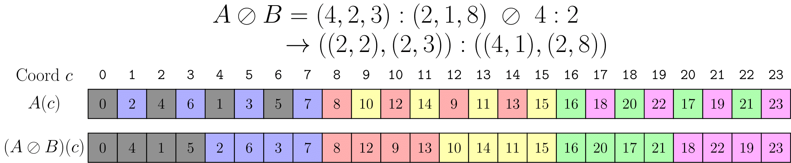
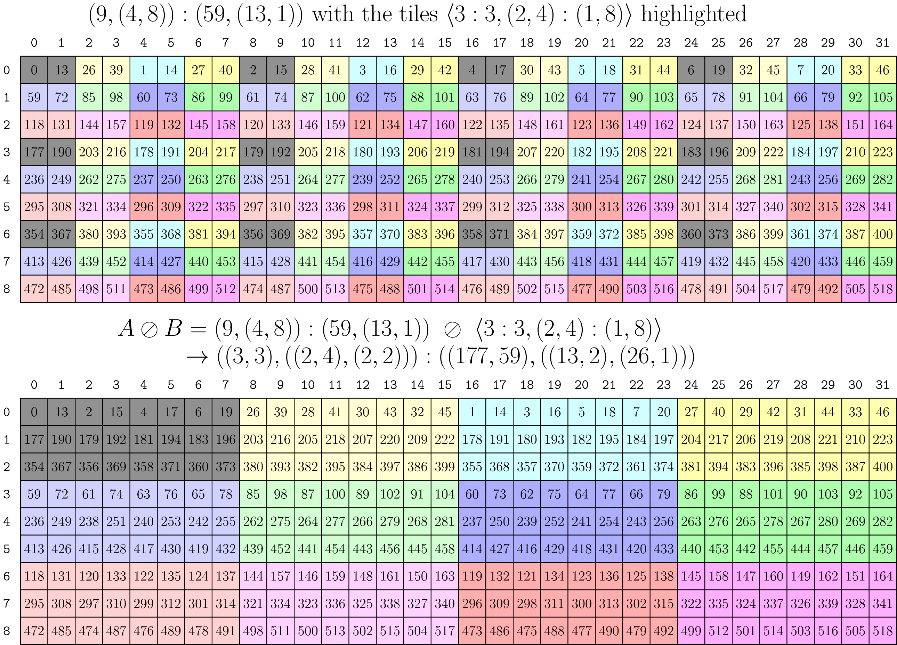
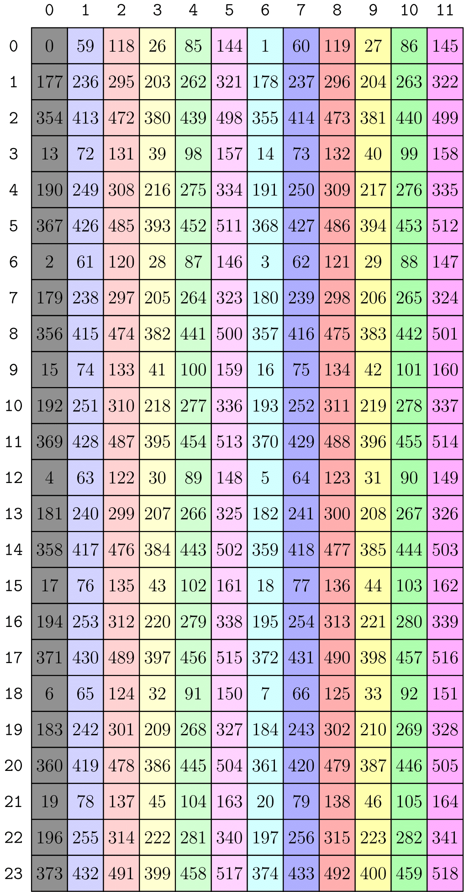
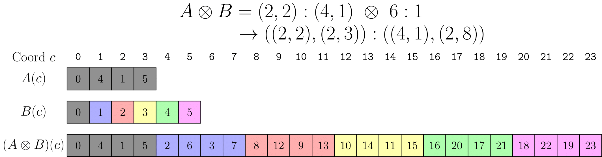
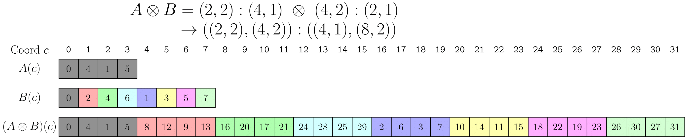
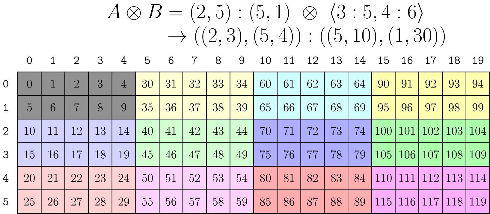
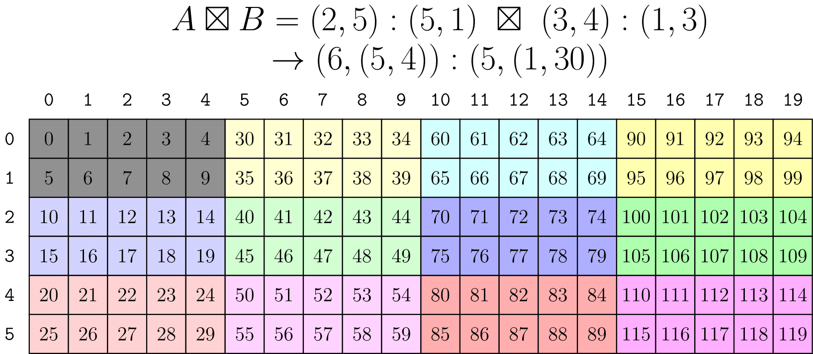
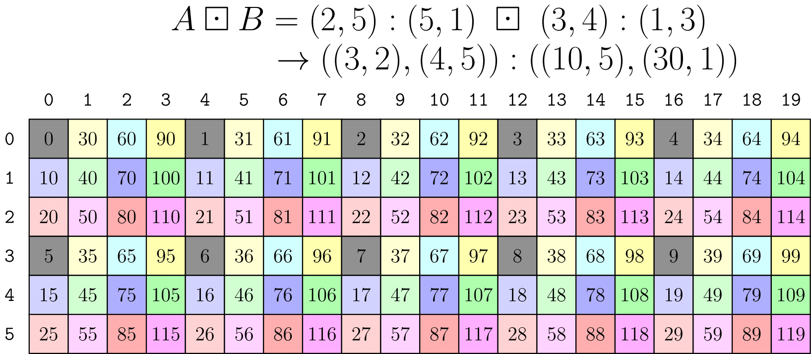

CuTe Layout Algebra
CuTe provides an “algebra of Layouts” to support combining layouts in different ways. This algebra includes operations such as
Layoutfunctional composition,- a notion of
Layout“product” to reproduce one layout according to another, and - a notion of
Layout“divide” to split one layout according to another.
Common utilities for building complicated layouts from simpler ones depend on the Layout product. Common utilities for partitioning layouts (of data, for example) across other layouts (of threads, for example) depend on the Layout divide. All of these utilities rely on the functional composition of Layouts.
In this section, we’ll build up the tools of the Layout algebra and explain some of these core operations in detail.
Coalesce
In the previous section, we summarized Layouts with > Layouts are functions from integers to integers.
The coalesce operation is a “simplify” on functions from integers to integers. If we only care about input integers, then we can manipulate the shape and number of modes of the Layout without changing it as a function. The only thing coalesce can’t change is the Layout’s size.
More specifically, you can find the checked post-conditions in the coalesce unit test, which we’ll reproduce here:
// @post size(@a result) == size(@a layout)
// @post depth(@a result) <= 1
// @post for all i, 0 <= i < size(@a layout), @a result(i) == @a layout(i)
Layout coalesce(Layout const& layout)For example,
auto layout = Layout<Shape <_2,Shape <_1,_6>>,
Stride<_1,Stride<_6,_2>>>{};
auto result = coalesce(layout); // _12:_1where we can see the result has fewer modes and is “simpler.” Indeed, this could save us a few operations in the coordinate mapping and index mapping (if those are performed dynamically).
So, how do we get there?
- We’ve already seen that column-major
Layouts like(_2,_4):(_1,_2)act identically to_8:_1for 1-D coordinates. - Modes with size static-1 will always produce a natural coordinate of static-0. They can be ignored no matter the stride.
Generalizing, consider a layout with just two integral modes, s0:d0 and s1:d1. Denote the result of coalescing this layout as s0:d0 ++ s1:d1. Then, there are four cases:
s0:d0 ++ _1:d1 => s0:d0. Ignore modes with size static-1._1:d0 ++ s1:d1 => s1:d1. Ignore modes with size static-1.s0:d0 ++ s1:s0*d0 => s0*s1:d0. If the second mode’s stride is the product of the first mode’s size and stride, then they can be combined.s0:d0 ++ s1:d1 => (s0,s1):(d0,d1). Else, nothing can be done and they must be treated separately.
That’s it! We can flatten any layout and apply the above binary operation to each pair of adjacent modes in order to “coalesce” the modes of the layout.
By-mode Coalesce
Obviously, sometimes we do care about the shape of our Layout, but would still like to coalesce. For example, I have a 2-D Layout and I would like the result to remain 2-D.
For this reason, there’s an overload of coalesce that takes an additional parameter
// Apply coalesce at the terminals of trg_profile
Layout coalesce(Layout const& layout, IntTuple const& trg_profile)which can be used as follows
auto a = Layout<Shape <_2,Shape <_1,_6>>,
Stride<_1,Stride<_6,_2>>>{};
auto result = coalesce(a, Step<_1,_1>{}); // (_2,_6):(_1,_2)
// Identical to
auto same_r = make_layout(coalesce(layout<0>(a)),
coalesce(layout<1>(a)));This function is recursing into Step<_1,_1>{} and applying coalesce to the corresponding sublayout whenever it sees an integer (the values don’t matter, they’re just flags) rather than a tuple.
This theme of defining an operation that treats a
Layoutas a “1-D” function from integers to integers and then generalizing to use it for an arbitrarily shaped layout will be a common one!
Composition
Functional composition of Layouts is the core of CuTe and is used in just about every higher-level operation.
Starting again from the observation that Layouts are just functions from integers to integers, we can define functional composition that results in another Layout. First, an example.
Functional composition, R := A o B
R(c) := (A o B)(c) := A(B(c))
Example
A = (6,2):(8,2)
B = (4,3):(3,1)
R( 0) = A(B( 0)) = A(B(0,0)) = A( 0) = A(0,0) = 0
R( 1) = A(B( 1)) = A(B(1,0)) = A( 3) = A(3,0) = 24
R( 2) = A(B( 2)) = A(B(2,0)) = A( 6) = A(0,1) = 2
R( 3) = A(B( 3)) = A(B(3,0)) = A( 9) = A(3,1) = 26
R( 4) = A(B( 4)) = A(B(0,1)) = A( 1) = A(1,0) = 8
R( 5) = A(B( 5)) = A(B(1,1)) = A( 4) = A(4,0) = 32
R( 6) = A(B( 6)) = A(B(2,1)) = A( 7) = A(1,1) = 10
R( 7) = A(B( 7)) = A(B(3,1)) = A(10) = A(4,1) = 34
R( 8) = A(B( 8)) = A(B(0,2)) = A( 2) = A(2,0) = 16
R( 9) = A(B( 9)) = A(B(1,2)) = A( 5) = A(5,0) = 40
R(10) = A(B(10)) = A(B(2,2)) = A( 8) = A(2,1) = 18
R(11) = A(B(11)) = A(B(3,2)) = A(11) = A(5,1) = 42The absolutely amazing observation is that the function R(c) = k defined above can be written down as another Layout
R = ((2,2),3):((24,2),8)AND
compatible(B, R)That is, every coordinate of B can also be used as a coordinate of R. This is an expected property of functional composition because B defines the domain of R.
You can find many examples and checked post-conditions in the composition unit test. The post-conditions are precisely as we just stated.
// @post compatible(@a layout_b, @a result)
// @post for all i, 0 <= i < size(@a layout_b), @a result(i) == @a layout_a(@a layout_b(i)))
Layout composition(LayoutA const& layout_a, LayoutB const& layout_b)Computing Composition
First, a few observations:
B = (B_0, B_1, ...). A layout can be expressed as the concatenation of its sublayouts.A o B = A o (B_0, B_1, ...) = (A o B_0, A o B_1, ...). WhenBis injective, composition is left-distributive with concatenation.
With the above, we can assume without loss of generality that B = s:d is a layout with integral shape and stride. We can also assume that A is a flattened, coalesced layout.
When A is integral, A = a:b, the result is rather trivial: R = A o B = a:b o s:d = s:(b*d). Here, the result of the composition R are the first s elements of A strided by d.
When A is multimodal, we need to be more careful. Put into words, A o B = A o s:d, for integral s and d means that we want to:
- Determine a layout that produces every
dth element ofA.
The shape of this intermediate layout can be calculated by progressively “dividing out” the first d elements from the shape of A starting from the left.
For example, * (6,2) / 2 => (3,2) * (6,2) / 3 => (2,2) * (6,2) / 6 => (1,2) * (6,2) / 12 => (1,1) * (3,6,2,8) / 3 => (1,6,2,8) * (3,6,2,8) / 6 => (1,3,2,8) * (3,6,2,8) / 9 => (1,2,2,8) * (3,6,2,8) / 72 => (1,1,1,4)
To compute the strides of the strided layout, the residues of the above operation are used to scale the strides of A. For instance, the last example (3,6,2,8):(w,x,y,z) / 72 with strides (w,x,y,z) produces (72*w,24*x,4*y,2*z) as the strides of the strided layout.
As you may have noticed, we can only divide shapes by certain values and get a sensible result. This is called the stride divisibility condition and is statically checked in CuTe when possible.
- Keep the first
selements of the newly stridedAso that the result has a compatible shape withB. This can be computed by “modding out” the firstselements from the shape ofAstarting from the left.
For example, * (6,2) % 2 => (2,1) * (6,2) % 3 => (3,1) * (6,2) % 6 => (6,1) * (6,2) % 12 => (6,2) * (3,6,2,8) % 6 => (3,2,1,1) * (3,6,2,8) % 9 => (3,3,1,1) * (1,2,2,8) % 2 => (1,2,1,1) * (1,2,2,8) % 16 => (1,2,2,4)
This operation causes the result to have a shape that is compatible with B.
Again, this operation must satisfy a shape divisibility condition to yield a sensible result and is statically checked in CuTe when possible.
From the above examples, we can construct the composition (3,6,2,8):(w,x,y,z) o 16:9 = (1,2,2,4):(9*w,3*x,y,z).
| #### Example 1 – Worked Example of Calculating a Composition We provide a more complex example of composition, where both operand layouts are multi-modal to illustrate the concepts introduced above. ``` Functional composition, R := A o B R(c) := (A o B)(c) := A(B(c)) |
|---|
1. Compute (6,2):(8,2) o 4:3 |
| - First, we compute the strided layout, |
| (6,2):(8,2) / 3 = (6/3,2):(8*3,2) = (2,2):(24,2) |
| - Next, we keep the shape compatible, |
| (2,2):(24,2) % 4 = (2,2):(24,2) |
- Compute
(6,2):(8,2) o 3:1
- First, we compute the strided layout
(6,2):(8,2) / 1 = (6,2):(8,2)
- Next, we keep the shape compatible,
(6,2):(8,2) % 3 = (3,1):(8,2)
Putting this together and coalescing each mode, we obtain the result
R = A o B = ((2, 2), 3): ((24, 2), 8)
#### Example 2 -- Reshape a layout into a matrix
`20:2 o (5,4):(4,1)`. Composition formulation.
This describes interpreting the layout `20:2`
as a 5x4 matrix in a row-major order.
1. ` = 20:2 o (5:4,4:1)`. Layout `(5,4):(4,1)` as concatenation of sublayouts.
2. ` = (20:2 o 5:4, 20:2 o 4:1)`. Left distributivity.
* `20:2 o 5:4 => 5:8`. Trivial case.
* `20:2 o 4:1 => 4:2`. Trivial case.
3. ` = (5:8, 4:2)`. Composed Layout as concatenation of sublayouts.
4. ` = (5,4):(8,2)`. Final composed layout.
#### Example 3 -- Reshape a layout into a matrix
`(10,2):(16,4) o (5,4):(1,5)`
This describes interpreting the layout `(10,2):(16,4)`
as a 5x4 matrix in a column-major order.
1. ` = (10,2):(16,4) o (5:1,4:5)`. Layout `(5,4):(1,5)` as concatenation of sublayouts.
2. ` = ((10,2):(16,4) o 5:1, (10,2):(16,4) o 4:5)`. Left distributivity.
* `(10,2):(16,4) o 5:1 => (5,1):(16,4)`. Mod out the shape `5`.
* `(10,2):(16,4) o 4:5 => (2,2):(80,4)`. Div out the stride `5`.
3. ` = ((5,1):(16,4), (2,2):(80,4))`. Composed Layout as concatenation of sublayouts.
4. ` = (5:16, (2,2):(80,4))`. By-mode coalesce.
5. ` = (5,(2,2))):(16,(80,4))`. Final composed layout.
We get exactly this result with CuTe
if we use compile-time shapes and strides.
The following C++ code prints `(_5,(_2,_2)):(_16,(_80,_4))`.
```cpp
Layout a = make_layout(make_shape (Int<10>{}, Int<2>{}),
make_stride(Int<16>{}, Int<4>{}));
Layout b = make_layout(make_shape (Int< 5>{}, Int<4>{}),
make_stride(Int< 1>{}, Int<5>{}));
Layout c = composition(a, b);
print(c);If we use dynamic integers, the following C++ code prints ((5,1),(2,2)):((16,4),(80,4)).
Layout a = make_layout(make_shape (10, 2),
make_stride(16, 4));
Layout b = make_layout(make_shape ( 5, 4),
make_stride( 1, 5));
Layout c = composition(a, b);
print(c);The results may look different but are the mathematically the same. The 1s in the shape don’t affect the layout as a mathematical function from 1-D coordinates to integers or as a function from 2-D coordinates to integers. In the dynamic case, CuTe can not coalesce the dynamic size-1 modes to “simplify” the layout due to the static rank and type of the tuples containing them.
By-mode Composition
Similar to by-mode coalesce and building up to a generic tiling operation, sometimes we do care about the shape of the A layout and would still like to apply composition to individual modes. For example, I have a 2-D Layout and would like some sublayout of the elements down the columns and another sublayout of elements across the rows.
For this reason, composition also works when its second parameter – the B – is a Tiler. In general, a tiler is a layout or a tuple-of-layouts (note the generalization on IntTuple), which can be used as follows
// (12,(4,8)):(59,(13,1))
auto a = make_layout(make_shape (12,make_shape ( 4,8)),
make_stride(59,make_stride(13,1)));
// <3:4, 8:2>
auto tiler = make_tile(Layout<_3,_4>{}, // Apply 3:4 to mode-0
Layout<_8,_2>{}); // Apply 8:2 to mode-1
// (_3,(2,4)):(236,(26,1))
auto result = composition(a, tiler);
// Identical to
auto same_r = make_layout(composition(layout<0>(a), get<0>(tiler)),
composition(layout<1>(a), get<1>(tiler)));We often use the <LayoutA, LayoutB, ...> notation to distinguish Tilers from the concatenation-of-sublayouts notation (LayoutA, LayoutB, ...) that we used previously.
The result in the above code can be depicted as the 3x8 sublayout of the original layout highlighted in the figure below. 
For convenience, CuTe also interprets Shapes as a tiler as well. A Shape is interpreted as tuple-of-layouts-with-stride-1:
// (12,(4,8)):(59,(13,1))
auto a = make_layout(make_shape (12,make_shape ( 4,8)),
make_stride(59,make_stride(13,1)));
// (8, 3)
auto tiler = make_shape(Int<3>{}, Int<8>{});
// Equivalent to <3:1, 8:1>
// auto tiler = make_tile(Layout<_3,_1>{}, // Apply 3:1 to mode-0
// Layout<_8,_1>{}); // Apply 8:1 to mode-1
// (_3,(4,2)):(59,(13,1))
auto result = composition(a, tiler);where result can be depicted as the 3x8 sublayout of the original layout highlighted in the figure below. 
Composition Tilers
In summary, a Tiler is one of the following objects. 1. A Layout. 2. A tuple of Tilers. 3. A Shape, which will be interpreted as a tiler of Layouts with stride-1.
Any of the above can be used as the second argument in composition. With (1), we think of the composition as between two functions from integers to integers, no matter the ranks of the layouts. With (2) and (3), the composition is performed on each pair of corresponding modes of A and B, until case (1) is found.
This allows composition to be applied by-mode to retrieve arbitrary sublayouts of specified modes of a tensor (“Give me the 3x5x8 subblock of this MxNxL tensor”) but also allows entire tiles of data to be reshaped and reordered as if they were 1-D vectors (“Reorder this 8x16 block of data into a 32x4 block using this weird order of elements”). We will see the by-mode cases appear often when we are tiling for threadblocks in examples that follow. We will see 1-D reshaping and reordering when we want to apply arbitrary partitioning patterns for threads and values in MMAs in examples that follow.
Complement
Before getting to “product” and “divide,” we need one more operation. We can think of composition as a layout B that is “selecting” certain coordinates from another layout A. But what about the coordinates that aren’t “selected”? To implement generic tiling, we want to be able to select arbitrary elements – the tile – and to describe the layout of those tiles – the leftovers, or the “rest.”
The complement of a layout attempts to find another layout that represents the “rest” – the elements that aren’t touched by the layout.
You can find many examples and checked post-conditions in the complement unit test. The post-conditions include
// @post cosize(make_layout(@a layout_a, @a result))) >= size(@a cotarget)
// @post cosize(@a result) >= round_up(size(@a cotarget), cosize(@a layout_a))
// @post for all i, 1 <= i < size(@a result),
// @a result(i-1) < @a result(i)
// @post for all i, 1 <= i < size(@a result),
// for all j, 0 <= j < size(@a layout_a),
// @a result(i) != @a layout_a(j)
Layout complement(LayoutA const& layout_a, Shape const& cotarget)That is, the complement R of a layout A with respect to a Shape (IntTuple) M satisfies the following properties. 1. The size (and cosize) of R is bounded by size(M). 2. R is ordered. That is, the strides of R are positive and increasing. This means that R is unique. 3. A and R have disjoint codomains. R attempts to “complete” the codomain of A.
The cotarget parameter above is most commonly an integer – you can see we only use size(cotarget) above. However, sometimes it is useful to specify an integer that has static properties. For example, 28 is a dynamic integer and (_4,7) is a shape with size 28 that is statically known to be divisible by _4. Both will produce the same complement mathematically, but the extra information can used by complement to preserve the staticness of the result as much as possible.
Complement Examples
complement is most effective on static shapes and strides, so consider all integers below to be static. Similar examples for dynamic shapes and strides as well as IntTuple cotarget can be found in the unit test.
complement(4:1, 24)is6:4. Note that(4,6):(1,4)has cosize24. The layout4:1is effectively repeated 6 times with6:4.complement(6:4, 24)is4:1. Note that(6,4):(4,1)has cosize24. The “hole” in6:4is filled with4:1.complement((4,6):(1,4), 24)is1:0. Nothing needs to be appended.complement(4:2, 24)is(2,3):(1,8). Note that(4,(2,3)):(2,(1,8))has cosize24. The “hole” in4:2is filled with2:1first, then everything is repeated 3 times with3:8.complement((2,4):(1,6), 24)is3:2. Note that((2,4),3):((1,6),2)has cosize24and produces unique indices.complement((2,2):(1,6), 24)is(3,2):(2,12). Note that((2,2),(3,2)):((1,6),(2,12))has cosize24and produces unique indices.

As a visualization, the above figure depicts the codomain of the last example. The image of the original layout(2,2):(1,6) is colored in gray. The complement effectively “repeats” the original layout (displayed in the other colors) such that the codomain size of the result is 24. The complement (3,2):(2,12) can be viewed as the “layout of the repetition.”
Division (Tiling)
Finally, we can define the division of a Layout by another Layout. Functions that divide a layout into components are useful as a basis for tiling and partitioning layouts.
In this section, we’ll define logical_divide(Layout, Layout), which again considers all Layouts as 1-D functions from integers to integers, and then use that definition to create multidimensional Layout divides.
Informally, logical_divide(A, B) splits a layout A into two modes – in the first mode are all elements pointed to by B and in the second mode are all elements not pointed to by B.
Formally, this can be written as
\(A \oslash B := A \circ (B,B^*)\)
and implemented as
template <class LShape, class LStride,
class TShape, class TStride>
auto logical_divide(Layout<LShape,LStride> const& layout,
Layout<TShape,TStride> const& tiler)
{
return composition(layout, make_layout(tiler, complement(tiler, size(layout))));
}Note that this is defined only in terms of concatenation, composition, and complement.
So what is that?
in the first mode are all elements pointed to by
B
This is clearly composition, A o B.
in the second mode are all elements not pointed to by
B
The elements NOT pointed to by B sounds like a complement, B*, up to the size of A. As we’ve seen above in the complement section, this can be described as the “layout of the repetition of B.” If B is the “tiler”, then B* is the layout of the tiles.
Logical Divide 1-D Example
Consider tiling the 1-D layout A = (4,2,3):(2,1,8) with the tiler B = 4:2. Informally, this means that we have a 1-D vector of 24 elements in some storage order defined by A and we want to extract tiles of 4 elements strided by 2.
This is computed in the three steps described in the implementation above. * Complement of B = 4:2 under size(A) = 24 is B* = (2,3):(1,8). * Concantenation of (B,B*) = (4,(2,3)):(2,(1,8)). * Composition of A = (4,2,3):(2,1,8) with (B,B*) is then ((2,2),(2,3)):((4,1),(2,8)).

The above figure depicts A as a 1-D layout with the elements pointed to by B highlighted in gray. The layout B describes our “tile” of data, and there are six of those tiles in A shown by each of the colors. After the divide, the first mode of the result is the tile of data and the second mode of the result iterates over each tile.
Logical Divide 2-D Example
Using the Tiler concept defined above, this immediately generalizes to multidimensional tiling. The below example simply applies layout_divide by-mode to the cols and rows of a 2-D layout using a Tiler.
Similar to the 2-D composition example above, consider a 2-D layout A = (9,(4,8)):(59,(13,1)) and want to apply 3:3 down the columns (mode-0) and (2,4):(1,8) across the rows (mode-1). This means the tiler can be written as B = <3:3, (2,4):(1,8)>.

The above figure depicts A as a 2-D layout with the elements pointed to by B highlighted in gray. The layout B describes our “tile” of data, and there are twelve of those tiles in A shown by each of the colors. After the divide, the first mode of each mode of the result is the tile of data and the second mode of each mode iterates over each tile. In that sense, this operation can be viewed as a kind of gather operation or as simply a permutation on the rows and cols.
Note that the first mode of each mode of the result is the sublayout (3,(2,4)):(177,(13,2)) and is precisely the result we would have received if we had applied composition instead of logical_divide.
Zipped, Tiled, Flat Divides
It’s easy to see the tiles when they are highlighted in the images above, but working with them can still be awkward. How would you slice out the 3rd tile or the 7th tile or the (1,2)th tile so you could continue working on it?
Enter the convenience flavors of logical_divide. Suppose we have a Layout and a Tiler of some shape, then each operation will apply logical_divide, but potentially rearrange the modes into more convenient forms.
Layout Shape : (M, N, L, ...)
Tiler Shape : <TileM, TileN>
logical_divide : ((TileM,RestM), (TileN,RestN), L, ...)
zipped_divide : ((TileM,TileN), (RestM,RestN,L,...))
tiled_divide : ((TileM,TileN), RestM, RestN, L, ...)
flat_divide : (TileM, TileN, RestM, RestN, L, ...)For example, the zipped_divide function applies logical_divide, and then gathers the “subtiles” into a single mode and the “rest” into a single mode.
// A: shape is (9,32)
auto layout_a = make_layout(make_shape (Int< 9>{}, make_shape (Int< 4>{}, Int<8>{})),
make_stride(Int<59>{}, make_stride(Int<13>{}, Int<1>{})));
// B: shape is (3,8)
auto tiler = make_tile(Layout<_3,_3>{}, // Apply 3:3 to mode-0
Layout<Shape <_2,_4>, // Apply (2,4):(1,8) to mode-1
Stride<_1,_8>>{});
// ((TileM,RestM), (TileN,RestN)) with shape ((3,3), (8,4))
auto ld = logical_divide(layout_a, tiler);
// ((TileM,TileN), (RestM,RestN)) with shape ((3,8), (3,4))
auto zd = zipped_divide(layout_a, tiler);Then, the offset to the 3rd tile is zd(0,3). The offset to the 7th tile is zd(0,7). The offset to the (1,2)th tile is zd(0,make_coord(1,2)). The tile itself always has layout layout<0>(zd). Indeed, it is always the case that
layout<0>(zipped_divide(a, b)) == composition(a, b).
We note that logical_divide preserves the semantics of the modes while permuting the elements within those modes – the M-mode of layout A is still the M-mode of the result and the N-mode of layout A is still the N-mode of the result.
This is not the case with zipped_divide. The mode-0 in the zipped_divide result is the Tile itself (of whatever rank the Tiler was) and mode-1 is the layout of those tiles. It doesn’t always make sense to plot these as 2-D layouts, because the M-mode is now more aptly the “tile-mode” and the N-mode is more aptly the “rest-mode”. Regardless, we still can plot the resulting layout as 2-D as shown below.

We’ve kept each tile as its color in the previous images for clarity. Clearly, iterating across tiles is now equivalent to iterating across a row of this layout and iterating over elements within a tile is equivalent to iterating down a column of this layout. As we’ll see in the Tensor section, this can be used to great effect in partitioning within or across tiles of data.
Product (Tiling)
Finally, we can define the product of a Layout by another Layout. In this section, we’ll define logical_product(Layout, Layout), which again considers all Layouts as 1-D functions from integers to integers, and then use that definition to create multidimensional Layout products.
Informally, logical_product(A, B) results in a two mode layout where the first mode is the layout A and the second mode is the layout B but with each element replaced by a “unique replication” of layout A.
Formally, this can be written as
\(A \otimes B := (A, A^* \circ B)\)
and implemented in CuTe as
template <class LShape, class LStride,
class TShape, class TStride>
auto logical_product(Layout<LShape,LStride> const& layout,
Layout<TShape,TStride> const& tiler)
{
return make_layout(layout, composition(complement(layout, size(layout)*cosize(tiler)), tiler));
}Note that this is defined only in terms of concatenation, composition, and complement.
So what is that?
where the first mode is the layout
A
This is clearly just a copy of A.
the second mode is the layout
Bbut with each element replaced by a “unique replication” of layoutA.
The “unique replication” of layout A sounds like complement, A*, up to the cosize of B. As we’ve seen in the complement section, this can be described as the “layout of the repetition of A”. If A is the “tile”, then A* is the layout of repetitions that are available for B.
Logical Product 1-D Example
Consider reproducing the 1-D layout A = (2,2):(4,1) according to B = 6:1. Informally, this means that we have a 1-D layout of 4 elements defined by A and we want to reproduce it 6 times.
This is computed in the three steps described in the implementation above. * Complement of A = (2,2):(4,1) under 6*4 = 24 is A* = (2,3):(2,8). * Composition of A* = (2,3):(2,8) with B = 6:1 is then (2,3):(2,8). * Concatenation of (A,A* o B) = ((2,2),(2,3)):((4,1),(2,8)).

The above figure depicts A and B as a 1-D layouts. The layout B describes the number and order of repetitions of A and they are colored for clarity. After the product, the first mode of the result is the tile of data and the second mode of the result iterates over each tile.
Note that the result is identical to the result of the 1-D Logical Divide example.
Of course, we can change the number and order of the tiles in the product by changing B.

For example, in the above image with B = (4,2):(2,1), there are 8 repeated tiles instead of 6 and the tiles are in a different order.
Logical Product 2-D Example
We can use the by-mode tiler strategies previously developed to write multidimensional products as well.

The above image demonstates the use of a tiler to apply logical_product by-mode. Despite this not being the recommended approach, the result is a rank-2 layout consisting of 2x5 row-major block that is tiled across a 3x4 column-major arrangement.
The reason this is not the recommended approach is that the tiler B in the above expression is highly unintuitive. In fact, it requires perfect knowledge of the shape and strides of A in order to construct. We would like to express “Tile Layout A according to Layout B” in a way that makes A and B independent and is much more intuitive.
Blocked and Raked Products
The blocked_product(LayoutA, LayoutB) and raked_product(LayoutA, LayoutB) are rank-sensitive transformations on top of 1-D logical_product that let us express the more intuitive Layout products that we most often want to express.
A key observation in the implementation of these functions are the compatibility post-conditions of logical_product:
// @post rank(result) == 2
// @post compatible(layout_a, layout<0>(result))
// @post compatible(layout_b, layout<1>(result))Because A is always compatible with mode-0 of the result and B is always compatible with mode-1 of the result, if we made A and B the same rank then we could “reassociate” like-modes after the product. That is, the “column” mode in A could be combined with the “column” mode in B and the “row” mode in A could be combined with the “row” mode in B, etc.
This is exactly what blocked_product and raked_product do and it is why they are called rank-sensitive. Unlike other CuTe functions that take Layout arguments, these care about the top-level rank of the arguments so that each mode can be reassociated after the logical_product.

The above image shows the same result as the tiler approach, but with much more intuitive arguments. A 2x5 row-major layout is arranged as a tile in a 3x4 column-major arrangement. Also note that blocked_product went ahead and coalesced mode-0 for us.
Similarly, raked_product combines the modes slightly differently. Instead of the resulting “column” mode being constructed from the A “column” mode then the B “column” mode, the resulting “column” mode is constructed from the B “column” mode then the A “column” mode.

This results in the “tile” A now being interleaved or “raked” with the “layout-of-tiles” B instead of appearing as blocks. Other references call this a “cyclic distribution.”
Zipped and Tiled Products
Similar to zipped_divide and tiled_divide, the zipped_product and tiled_product simply rearrange the modes that result from a by-mode logical_product.
Layout Shape : (M, N, L, ...)
Tiler Shape : <TileM, TileN>
logical_product : ((M,TileM), (N,TileN), L, ...)
zipped_product : ((M,N), (TileM,TileN,L,...))
tiled_product : ((M,N), TileM, TileN, L, ...)
flat_product : (M, N, TileM, TileN, L, ...)Copyright
Copyright (c) 2017 - 2025 NVIDIA CORPORATION & AFFILIATES. All rights reserved. SPDX-License-Identifier: BSD-3-Clause
Redistribution and use in source and binary forms, with or without
modification, are permitted provided that the following conditions are met:
1. Redistributions of source code must retain the above copyright notice, this
list of conditions and the following disclaimer.
2. Redistributions in binary form must reproduce the above copyright notice,
this list of conditions and the following disclaimer in the documentation
and/or other materials provided with the distribution.
3. Neither the name of the copyright holder nor the names of its
contributors may be used to endorse or promote products derived from
this software without specific prior written permission.
THIS SOFTWARE IS PROVIDED BY THE COPYRIGHT HOLDERS AND CONTRIBUTORS "AS IS"
AND ANY EXPRESS OR IMPLIED WARRANTIES, INCLUDING, BUT NOT LIMITED TO, THE
IMPLIED WARRANTIES OF MERCHANTABILITY AND FITNESS FOR A PARTICULAR PURPOSE ARE
DISCLAIMED. IN NO EVENT SHALL THE COPYRIGHT HOLDER OR CONTRIBUTORS BE LIABLE
FOR ANY DIRECT, INDIRECT, INCIDENTAL, SPECIAL, EXEMPLARY, OR CONSEQUENTIAL
DAMAGES (INCLUDING, BUT NOT LIMITED TO, PROCUREMENT OF SUBSTITUTE GOODS OR
SERVICES; LOSS OF USE, DATA, OR PROFITS; OR BUSINESS INTERRUPTION) HOWEVER
CAUSED AND ON ANY THEORY OF LIABILITY, WHETHER IN CONTRACT, STRICT LIABILITY,
OR TORT (INCLUDING NEGLIGENCE OR OTHERWISE) ARISING IN ANY WAY OUT OF THE USE
OF THIS SOFTWARE, EVEN IF ADVISED OF THE POSSIBILITY OF SUCH DAMAGE.